Problemmaterial Wärmedämmverbundsysteme WDVS und Kerndämmung - und das Problem Feuchte, Nässe, Frost, Eis und Kondensat
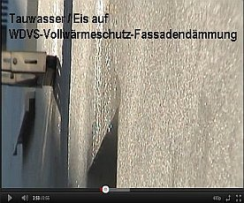
Wärmedämmverbundssteme bestehen nicht nur aus irgendeinem künstlichen oder natürlichen Dämmstoff, sondern darüber hinaus aus
weiteren, recht unterschiedlichen Materialien, Baustoffen und Befestigungselementen, die sich in phsikalischer und chemischer Hinsicht
meist komplett anders verhalten. Dübel und Anker versagen über kurz oder lang, die ebenso wie ihre Beschichtungen gerne toxisch
hydrophobierten Dämmstoffgespinste und -schäume weisen zwar Wasser ab, saugen sich aber - da nicht luftdicht und dank irrer
Temperaturdehnung der Dämmhaut schnell mit kapillarsaugenden Mikrorissen durchnetzt - von ihrem Taupunkt her zunehmend mit Kondensat
und dank nächtlicher Extrem-Auskühlung nicht mehr schnell abtrocknenden Regenfrachten voll und geben die systematisch eingedrungene
Nässe mangels Kapillaraktivität nicht mehr richtig ab, die kunstharzverschnittenen Oberflächenbeschichtungen ("Putze" und "Anstriche") korrodieren und werden
wegen ihrer - einen besiedlungsfreundlichen sauren pH-Wert garantierenden - organischen Kunststoffanteile und der damit automatisch
verbundenen wasserrückhaltenden Funktion bevorzugt von Schimmeln und Algen besiedelt
und aufgefressen und sperren die durch ihr versprödungs- und temperaturdehnungsbedingtes Kapillarrißnetzsystem eingedrungene
Feuchte dauerhaft ein. Letzteres beschleunigt natürlich die Zerstörung des Gesamtsystems, das deswegen im Vergleich zu allen anderen
Fassadensystemen irrsinige Mehrkosten bei der Instandhalterei verursacht. Witzigerweise - wer hätte anderes erwartet - meistens
wenige Jahre nach Ablauf der Gewährleistung. Und da helfen weder die Giftmischereien noch die im Deckputz eingearbeiteten bzw.
eingebetteten Kunststoff- bzw. Glasfaserbewehrungen, die das Aufreißen der Oberflächen begrenzen sollen, wirklich weiter.
Vorsichtshalber schmeißt man nun etwas mehr wasserlösliches / u.a. algentötendes Gift (vorzugsweise die grauenhaften
und in der Landwirtschaft teils schon verbotenen Biozide/Pestizide wie Isoproturon, Terbutryn, Zinkpyrithion,
Jod-Propinylbutylcarbamat/IPBC, Diuron, Cybutryn, Octyl-Isothiazolinon/OIT und Dichloro-Octyl-Isothiazolinon / DCOIT in einer
wirkungsoptimierten Kombination aus ca. 5 Giften) in die Beschichtung: Fungizid, das zunächst in flüssiger Phase dank Beregnung bzw.
fast jede Nacht an der schnellstens abgekühlten Dämmfassade stattfindenden Betauung / Kondensatanreicherung an die Oberfläche
diffundiert, dann vom Regen ausgewaschen wird und nicht nur das Kanalsystem belastet, die Kläranlage umkippen läßt und das
Grundwasser bereichert, sondern auch den Vorgarten. Damit die dort spielenden Prekariatspisaner / Kinder sich besser abhärten?
Über die Top-Entsorgungskosten für all' den Problemmüll in, an, vor und hinter der Fassade schweigen wir
lieber. Wer mehr über z.B. die nur abfallwirtschaftlichen Probleme in Algizidverseuchten WDVS-Wohngebieten lernen
will - das Wasserforschungs-Institut Eawag des ETH-Bereichs Abt. Siedlungswasserwirtschaft SWW, die Universität
Duisburg-Essen und die Eidgenössische Materialprüfungs- und Forschungsanstalt EMPA, Abt. Bautechnologien
haben die Facts in der gemeinsamen und mir vorliegenden Forschungsarbeit "Auswaschung aus Fassaden versus
nachhaltiger Regenwassernutzung", Verf. M. Burkhardt, S. Zuleeg, T. Marti, K. Bester, R. Vonbank, H. Simmler und
M. Boller auf 12 Seiten zusammengetragen. Doch damit nicht genug. In der mir ebenfalls vorliegende Studie der
gleichen Autoren "Biozide in Gebäudefassaden - ökotoxokologische Effekte, Auswaschung und Belastungsabschätzung
für Gewässer" findet sich folgende Aussage der Untersuchung an acht Bioziden, "die in kunstharzgebundenen
Fassadenbeschichtungen verwendet" werden:
"Die akuten und chronischen Kriterien ...weisen auf eine hohe Ökotoxizität der betrachteten Biozide hin. Die Ergebnisse zum
Auswaschungsverhalten von vier Bioziden (Diuron, Terbutryn, Cybutryn und Carbendazim) zeigen, dass die Wirkstoffe im Fassadenabfluss
vorkommen und die Belastung unter den gewählten experimentellen Bedingungen exponentiell abnimmt. Dabei führt eine Temperaturerhöhung
wieder zum Konzentrationsanstieg. Die ausgewaschenen Stoffmengen liegen zwischen 7 % und 29 %. Bereits innerhalb der ersten 15 min
wurde mehr als die Hälfte der gesamten Stoffmenge während der 60 min Beregnungsdauer herausgewaschen. Die Stofftransportmodellierung
zum Eintrag des Biozids Cybutryn aus Fassaden ins Gewässer deutet auf ein hohes Belastungspotential für kleinere Gewässer hin. ...
Kritische Konzentrationsbereiche im Fassadenabfluss sind an neuen Gebäudefassaden zu erwarten, in der Regel vor allem an
wärmegedämmten Fassaden."
Logo, daß der Bund Naturschutz in Bayern, dessen arg oft enttäuschtes Mitglied ich seit über 30 Jahren immer noch bin (Unsere Ehre heißt
Treue, so das ökofaschistische SS-Motto von anno dunnemals), die menschheits- und naturverpestenden Dämmstofforgien nach besten
Kräften fördert. Naturschutz pervers, pfui Deibi!
WDVS-Giftfassaden - der ultimative Beitrag zum Klimaschutz?

Grauenhafte Giftströme also in unseren Kanälen und dem Klärwerk vor allem in den ersten Jahren als direkte Folge der
chemiekorrumpierten Klimaschutzdiktatur, bis die Hexensoße mehr oder weniger ausgewaschen ist. Danach grünt es wieder an den
verrottenden WDVS-Fassaden. Doch die Umwelt und die Spielwiese vor dem Haus ist dann verpestet. Danke, lieber Energiesparweltmeister!
Aecht Bio-Öko eben, was uns so manche der schon seit jeher den ungeheuerlichsten Giften (Bleiweiß-Farben, Arsenfarben) frönenden
verantwortungs- und gewissenlosen Malerbetriebe unter der Marke Blauer Engel zumuten. Als Energiesparklimbim zur Weltrettung verbrämt.
Ach, warum eigentlich für solche Anschläge auf unsere Lebensqualität nicht die Scharia einführen - oder wenigstens das urchristliche
Gottesurteil? Ob für massenmörderische Brunnenvergifter - oder ist es der bevorzugte Ritualmord der Universal Church of Global Warming
and Climate Protection? - die Abwasserprobe genügte? Wer wie viele ("die Bauvorschriften zwingen uns dazu") Handwerker an nutzlose
Schaumbaustoffe, Plaste und Elaste glaubt, trägt sicher neben den Vergiftungsfolgen an seiner und seiner Nachbarn Gesundheit auch
gerne die Kosten für das Handling der Chemiekampfstoffe. Und die Ökoterroristen allerorten bürden uns auch diesen Schwachsinn gerne
druff. Es war schon immer etwas teurer, ...
Gegenwehr des dämmstoffbeschissenen Kunden? Prüfen Sie mal die Amortisation der Dämminvestition. Wenn es unwirtschaftlich ist (Amortisation über 10 Jahre) besteht gegenüber dem WDVS-Planer (das kann auch der ausführende Handwerker sein!) möglicherweise Regereßmöglichkeit, wenn er ihnen die nicht gegebene Wirtschaftlichkeit der Maßnahme nicht verraten hat. Die dafür anzusetzende Gewährleistungsfrist beginnt meist erst, nachdem Sie den Mangel entdeckt haben. Zu Risiken und Nebenwirkungen fragen Sie Ihren Rechtsanwalt.
Inzwischen sind die Fachzeitschriften voll von grünen Dämmfassaden - und die industriefreundlichen Autoren behaupten gegen besseres Wissen:
1. Die Veralgung ist sozusagen kein Mangel, sondern nur ein optisch-ästhetisches Ereignis.
2. Porenfüllende und wasserabweisende Fassadenbeschichtung könnten den Algenwuchs /Grünalgenbefall behindern. Vielleicht sogar
besonders infrarotabsorbierende dunkle Anstriche - wer weiß schon, was die chem. Industrie da wieder aus dem Hut zaubert?
3. Ein grauslicher Giftcocktail in Putz und Anstrich (schöngefärbt für Bausäftl: "Fungizid" + "Algizid") würde helfen - nach dem Motto:
"Viel hilft viel."
So sieht das in veralgter Wahrheit aus - nur kurze Zeit nach Einweihung:
 Total versaute, verschwärzte, vergrünte und abgesoffene WDVS-Fassade. Ja, so ein Energiesparen überzeugt eben
schwarze, rote und grünbraune Bauherren vom Wärmedämmverbundsystem mit Kunstharzanstrich. Bewährte System, heißt das im Prospekt,
und "schon immer so gemacht" aus Handwerkersimplmaul.
Total versaute, verschwärzte, vergrünte und abgesoffene WDVS-Fassade. Ja, so ein Energiesparen überzeugt eben
schwarze, rote und grünbraune Bauherren vom Wärmedämmverbundsystem mit Kunstharzanstrich. Bewährte System, heißt das im Prospekt,
und "schon immer so gemacht" aus Handwerkersimplmaul.
Sogar das Architektenblatt, sonst oft anzeigengespicktes Sprachrohr des technischen Fortschritts ohne Beachtung Wirtschaftlichkeit und Effizienz, ist einmal ein bißchen aufgewacht und brachte in "Technologie/Bautechnik", DAB 11/2000 einen Artikel von Hans-Jürgen Bühler: "Kondensation, Reif- und Eisbildung auf Wärmedämmverbundsystemen"
Auszüge:
Messtechnische Untersuchungen
Eine Kondensation auf der Putzoberfläche tritt nur auf, wenn die Taupunkttemperatur der Außenluft die Putzoberflächentemperatur unterschreitet. ... Bei Berechnung der Außenoberflächentemperatur nach DIN 4108 liegt die Temperatur der Außenoberfläche auch bei sehr gut gedämmten Gebäuden immer über der Außenlufttemperatur. Eine außenseitige Oberflächenkondensation ist damit entsprechend dem Rechenansatz der DIN 4108 "Wärmeschutz im Hochbau" nicht möglich. Warum treten dann trotzdem Kondensationseffekte bzw. bei Temperaturen unter 0 °C Reif- und Eisbildung auf? Neben rein konvektiven Wärmeübertragungsvorgängen an der Außenoberfläche muss vor allem bei klaren Nächten der langwellige Strahlungsaustausch mit der Atmosphäre bzw. der Umgebung des Gebäudes berücksichtigt werden.
Das Himmelsgewölbe kann während klarer Nächte als schwarzer Strahler mit einer Effektivtemperatur von -30 °C bis -50 °C angesehen werden. Dadurch wird der dünnen Putzbeschichtung des Wärmedämmverbundsystems eine Wärmeleistung von ca. 40-50 W/m² entzogen. Die Putzschicht wird daher unter die Außenlufttemperatur abgekühlt. ... Während der Messperiode konnte [an einem WDVS] ein vollständiges Abtrocknen der [nächtlich kondensatvereisten] Fassade tagsüber nicht festgestellt werden. ...
Die durchgeführten Untersuchungen zeigen ..., dass [durch Außen-Wärmedämmung] die thermischen und hygrischen Belastungen der Außenoberflächen aufgrund von Kondensationseffekten zunehmen werden. Kritisch sind hierbei vor allem Wärmedämmverbundsysteme zu sehen. Die Problemzonen verlagern sich mit steigendem Dämmstandard von der Innen- zur Außenseite.
Es müssen schnellstmöglich Anstrengungen unternommen werden, um die ... Problematik möglichst vor Inkrafttreten der Energieeinsparverordnung zu lösen." Kommentar: Pustekuchen!
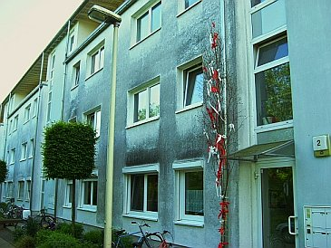
Verschweinste WDVS-Drecksfassade auf Neubau. Nur kurze Standzeit, dann kommt es geradezu automatisch zur Schmuddelfassade, wie jeder Fachmann inzwischen weiß. So sicher, wie das Amen in der Kirche (in die ja niemand mehr geht). Danke, herzliebster Industrieberater, daß Du dem Planer so dolle bei der Energiesparplanung und dem Auffetten seiner Einnahmen geholfen hast. Ohne Dich wäre es weder gelungen, keine Heizenergie zu sparen (WDVS führen grundsätzlich zu höherem Energieverbrauch, vgl. einschlägige Versuchsreihen des Fraunhofer-Instituts für Bauphysik 1983-85), noch die Hausfassade in kürzester Zeit in so eine Sauerei zu verwandeln, noch dem Planerbüro so eine dicke Weihnachtsfestsause zu gönnen. In Kürze sieht es auf Deutschlands Fassaden überall so aus, wollmer wetten? Da wird die Regierung schon für sorgen. Und ist das WDVS-Versauungs-Schmuddel-Problem nun gelöst worden? Daß ich net lache! Das Gegenteil ist der Fall. Vehement setzt die lobbykratisierte Bundesregierung ihren auf Geheiß bösartigster Gestzesparasiten (die als "externe" Experten die Entscheidungsvorlagen in allen Fachausschüssen regieren) eingeschlagenen Weg zur Vernichtung der Volkswirtschaft und -gesundheit mittels Energieeinsparverordnung EnEV, ErneuerbareEnergienWärmeGesetz EEWärmeG, Energieeffizienzgesetz EEG usw. fort. Subventionsgestützt mit einem "CO2-Minderungsprogramm", "KfW-Krediten und -Zuschüssen" usw. Fette Parteispenden (System Adenauer, Kiesinger, Brandt, Schmidt, Kohl, Merkel usw.) und wohlgelittene Korruption bzw. Lobbyistentätigkeit in den einschlägigen Ministerien und maßgeblichen Ausschüssen Umwelt, Bau und Wirtschaft oder was?Gemäß der auf Fourier, der seinerzeit noch die Wärme als Ausfluß des sog.
Phlogistons - eine ätherähnliche "Flüssigkeit" verdächtigte und darauf seine Theorien der Wärmeleitung aufbaute, beruhenden irren
stationären Rechnerei wirken auf die Wärmeleitung durch Stoffe die Materialdicke, die Wärmeleitfähigkeit als Stoffkonstante und das
Temperaturgefälle. Letzteres wird gem. Norm auf -15 °C begrenzt. Da aber Dämmstoffe eben nicht speichern, was sie tagsüber als
Solarwärme angeboten bekamen, sondern hurtigst auskühlen, erreichen ihre Oberflächentemperaturen bei klaren Winternächten gigantische
Minuswerte gegenüber dem kalten Nachthimmel (Weltall-Temperatur knapp über absolutem Nullpunkt bis ca. -270 °C, atmosphärische Gegenstrahlung des Himmels je
nach Wasserdampfgehalt, Luftverschmutzung und Wolkenbedeckung bis ca. - 60 °C, winterliche Wolkentemperatur zwischen 0 und -45 °C), die auch im Sommer weit
unter den Lufttemperaturen liegen. Die jeweils vorhandene Himmeltemperatur kann übrigens Jeder selber messen mit einem simplen IR-Meßgerät für wenige Euros
aus dem elektronischen Versandhandel.
Deswegen also die erhebliche Kondensataufnahme aus nächtlich abkühlender Außenluft inkl. sommerlichem Bewuchs mit biologischem
Allerlei. Deswegen auch die übergroße Temperaturdehnung mit folgender Rißbildung, deswegen die Blasenbildung über eingedrungener Nässe,
die kapillar nie mehr herauskommt.
Deswegen auch ein gigantisches Temperaturgefälle, das automatisch - auch rechnerisch, meine lieben Normapostel und Depperlesphysikanten - jegliche "gute", da
geringe Wärmeleitfähigkeit von Dämmstoffen mehr als aufhebt. Auch das ist Mathematik! Super, wie die auch an schönen Produzentenumsätzen interessierten
Profi-Mitglieder der betreffenden DIN-Ausschüsse das alles professionell verschweigen und die profimäßig bediente Administration den ganzen Schwindel nicht nur
stillschweigend schluckt, sondern auch in Baupfusch sowie Profiumsatzexplosion garantierenden Bauvorschriften durchdrückt. Pfui Deibi.
 Eine Dämmfassade (WDVS) am 9.1.06
um 8.00 Uhr an einem sonnenklaren Wintermorgen: Es ist nicht Mehltau, sondern ein Eispanzer, der auf der Fassadenoberfläche blitzt.
Eine Dämmfassade (WDVS) am 9.1.06
um 8.00 Uhr an einem sonnenklaren Wintermorgen: Es ist nicht Mehltau, sondern ein Eispanzer, der auf der Fassadenoberfläche blitzt.
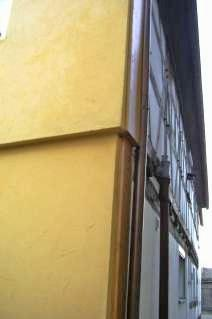
Schade um das arme, alte Fachwerkhaus, das nun hinter der bei jeder Luftabkühlung aufkondensierenden Nassdämmung dahinmorschen wird. Im Obergeschoß wieder sichtbare Eisbeläge.Die Südseite - WDVS-Oberfläche hatte um 8.00 Uhr morgens -5 °C, die Fachwerk-Ostseite, 1,5 Meter von der Nachbarwand-Westfassade hatte +1 °C.
Die nicht von einer Nachbarwand 'geschützte' Garagenwand Nordseite! an meinem Wohnhaus, 36,5 cm Hochlochziegel von 1962, weiß verputzt, hatte gleichzeitig
eine Außenoberflächentemperatur von ca. -1 °C, bei Außenluft von -5 °C, in der ungeheizten Garage innen hatte es 1° C, die Innenwandoberfläche war
ebenso 1 °C warm.
Der Himmel war bei -28 °C:
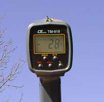
Und alle Autoscheiben waren vereist.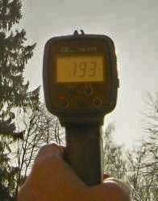
Um 13.00 Uhr dann die Messung in Richtung Sonne: +193 °C! Meine Bürowände aus 40 cm Massivziegel, beidseitig verputzt hatten dann: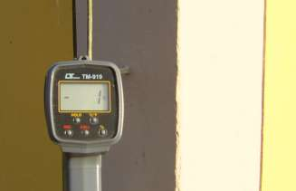
Im Schatten -1 °C, und in der Sonne +9 °C.Die Eisentür zum Keller war sonnenlichtbeschienen: 23 °C! Außenluft noch immer -4 °C. Da gibt es eben keine Kondensataufnahme, die Massivwände speichern ja die tagsüber aufgenommene Solarenergie und strahlen sie gemütlich die ganze bitterkalte Nacht noch ab, nie sinkt die Oberflächentemperatur unter die Lufttemperatur. Natürlich gibt es dann auch bei weitem nicht die Materialbeanspruchung an der Fassade durch thermische und hygrischer Belastung (Dehnung und Kontraktion, Quellen und Schwinden). Schön blöd, wer da auf Leichtbauweise und Pappendeckeltechnik vertraut.
Sehr schön auch dieser Fassadenpfusch in Österreich, der die Problematik der Temperaturdehnung besonders klar entlarvt: Großfassade im Wohnungsbau verdämmt
Die SZ haut auf den WDVS-Murks am 16.2.02 so drauf:
Von Renate Winkler-Schlang
Edmund Bromm klopft am Putz und es klingt hohl. "Da", sagt er, schüttelt den Kopf. Und wieder: "Da." Sein Zeigerfinger weist auf einen Riss. ...
Nach so kurzer Zeit dürfte der Putz direkt über den Eingangstüren nicht quadratmeterweise abblättern. Es dürften rechts davon keine weißen Putzteile in den dunklen Ritzen des Kopfsteinpflasters Zeugnis geben vom allzu früh einsetzenden Zerfall, sich keine Risse im Putz gebildet haben, die darauf schließen lassen, dass neue Teile sich bald lösen. ...
"Da", sagt er wieder und erklärt, dass fehlerhafte Wärmedämmung die Ursache ist für die bereits sichtbaren Schäden. Die millimeterdünne Spachtelung auf der Dämmschicht und ihrer Armierung ist auf den großen Wandflächen einer großen mechanischen Beanspruchung ausgesetzt: Ober- und Untermaterial reagieren anders auf die großen Temperaturschwankungen: Die Materialien sind nicht elastisch genug. Es entstehen immer mehr Risse, die sich zunächst wie kleine Netze ausnehmen. Hier dringt Wasser ein, kann nicht mehr schnell genug nach außen transportiert werden, wird nachts zu Eis, sprengt die Flächen weiter auf. Der Oberputz bildet erst Blasen, dann löst er sich. Oder an den nassen Stellen wird Dreck gebunden, siedeln sich Algen an: Die Fassade vor allem im oberen Bereich verfärbt sich braungrün. ...
Von der Weite schon sieht man auch (an den Versorgungs- und Lagerhallen) dunkle Stellen und Risse. Am Ende weist Bromm hin auf die hässlichen Löcher rund um die Alufenster des Messebüros: Aluminium verändere sich bei Temperaturschwankungen am meisten.
Wirklich sanieren könne man solche Schäden eigentlich nicht, meint der Fachmann: Ein neuer Anstrich brächte optische Verschönerung, schlösse dabei aber manchen Haarriss, sodass Kondenswasser nicht mehr austreten könnte. "Und man muss wissen, dass schon fünf Prozent Feuchte den Dämmwert um etwa 50 Prozent reduzieren." Entschließe sich die Messe eines Tages zur Komplettsanierung, habe sie ein Entsorgungsproblem mit diesen Kunststoffen. ...
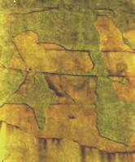
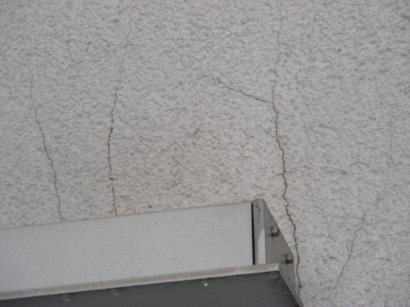
.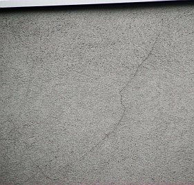
.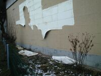
Ein Lob auf die Baubranche, das sichert Aufträge in schwerer Zeit! Den ärmeren Mietern empfiehlt sich, Quartiere ohne Dämmverpackung auszusuchen. Wer wird denn wohl die Zeche zahlen, wenn die WDV-Fassade dran bzw. nicht mehr dran ist? Nur die mieterunfreundlichsten Vermieter gönnen ihren Wohnungsinsassen Investitionsumlagen in Technikschwachsinn. Hauptsache, es bringt fette Provisionen vom Dämmstoffheini. Und so sieht die Depperla-Chose rund um Frost, Eis, Tau und Algen (nicht Alpen!), Befrostung, Vereisung, Kondensat-Kondensation und Veralgung am WDVS (Wärmedämmverbundsystem) dann an einem frisch errichteten Staatsbau in Österreich, dem Vorreiter-Wunderland der staatlich verordneten Kidioto-Klimaschutzerlösung und Endlösung der Abzockfrage, aus: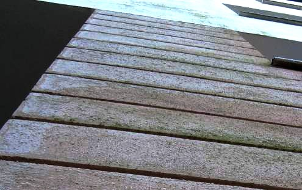
1 - Die eisigen Flächen - am 23. 12 2006 dieses warmen Winters - glänzen hell und klingen dumpf, da hohl. Der Rest grünt dahin. Das eisige Strahlen spart tagsüber Glühlampenbetrieb, stört aber etwas den Autoverkehr! Gottseidank haben Österreicher Sunnenbrilln.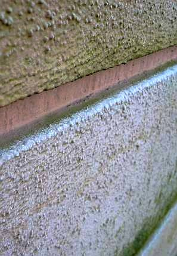
2 - Auf den Oberkanten der herumhistorisierenden WDVS-Rustizierung kühlt der nächtliche Himmel noch dollerer aus - fette Reifkristallwülste frosten dort entlang und betonen die schnuckelige Architektursprache. Der Algenbewuchs wird nach vierteljährlicher Abkratzung durch äußerst preisgünstige Balkanexperten geerntet und dann nach dreistündiger Vollmond-Heulagerung auf würzigen kunstholzlärchenverschindelten Betonalmen mit hausschwammbefallenem Zirbenholz geräuchert und geselcht und italienischen Touristen als neue Spezialität und urig-gmiatliche Fassaden-Pesto-Spaghettibeilage serviert. Vorwiegend in oberkärntner Wohlfühl-Wellness-Oasen am kraftfelderreichen Fuße des Mondscheingipfels (2.103, 57 m ü.M.).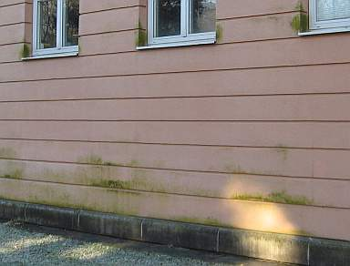
3 - Auch die besser verschatteten Restflächen sind superökobio. Dort kommt zwar die Himmelskälte nicht so hin, aber Kondensat gibt's freili mea ois gnua auf und unter der trocknungsblockierenden Kunstharzschwarte, um die Algerl, Schwammerl und Puizerl recht fett zu nähren. Und freili is das Giftmittel (Algizid/Fungizid) in der vollchemikalischen Schwartenbesoßung an etwas witterungsexponierteren Partien im Handumdrehn ausgewaschen und läßt dort besonders reichliche Biotop-Ernten zu. Das könnte das österreichische Schulministerium natürlich für seine Zwecke - den Österreicher schon in jungen Jahren zum Vollökologen heranzubilden - bestens nutzen und Studienfahrten anordnen. So wird in diesem Finanzstaatskassenbau nicht nur der abgezockte Bürger verwaltet und eventuell auch die Jugend abgerichtet, sondern glei im Handumdrehn der dem Ösi aus dem Kreuz geleierte Mariatheresientaler maximal an der Fassade versaubeutelt. Grätuläischn, sogt der Wiänä, a Skandealerl mera tut nix schodn im Felix Austria. Hauptsoch, die beteiligten Öko-Absahn-Spözln haben sich dabei gut beösterreichert ...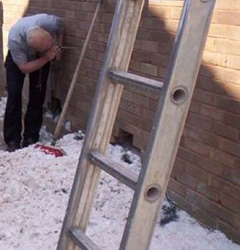
Ein Spitzenlink zum Problem absaufende Wärmedämmung an Fassaden aus dem Bauexpertenforum: www.bauexpertenforum.de/showthread.php?t=8068
Fotos - Edi Bromms Wärmeschutzpanoptikum
Weitere lustige Bauschäden an Wärmedämmverbundsystemen WDVS
Weiter mit Der Schwindel mit der Wärmedämmung - Kapitel 15